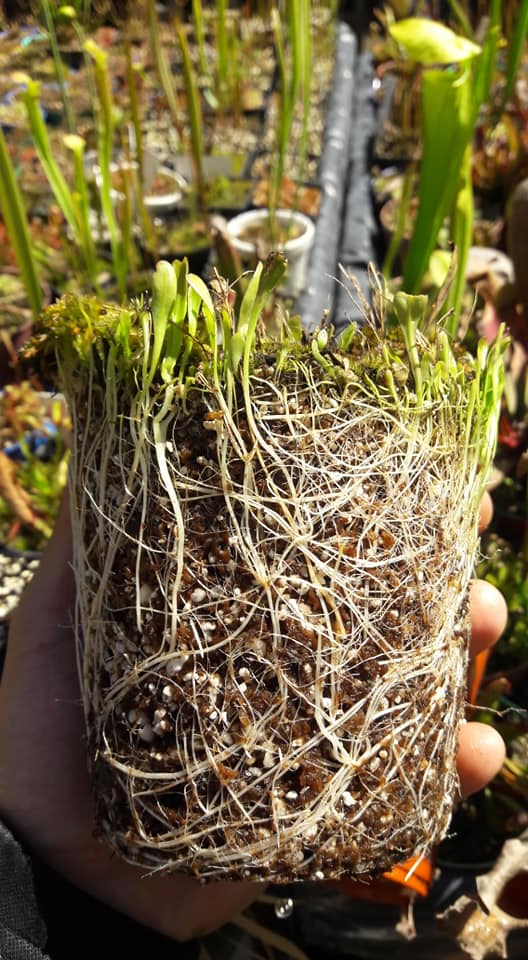
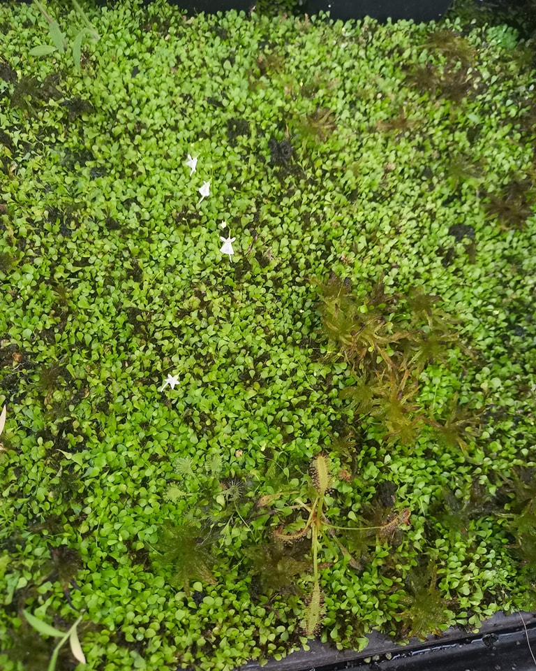
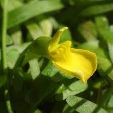

Utricularia
Hábitat Natural
Ubicación: Se distribuyen por todo el mundo, incluyendo Argentina. Habitan desde zonas acuáticas, pantanosas y riberas, hasta suelos húmedos y pobres en nutrientes.
Condiciones: Prefieren ambientes con agua estancada o flujo lento y luz filtrada. Algunas especies crecen epífitas sobre musgo o troncos húmedos.
Entorno: Dependiendo de la especie, pueden desarrollarse en suelos inundados, acuáticos flotantes o en musgo húmedo.
Descripción
Forma: Plantas generalmente tapizantes, con hojas pequeñas y raíces modificadas en forma de trampas. Las flores son vistosas y variadas, ganándose el apodo de "mini orquídeas" por sus colores y formas delicadas. Algunas especies epífitas crecen sobre musgo húmedo o ramas bajas.
Tamaño
Tamaño máximo: La mayoría de las especies son diminutas, con hojas de pocos milímetros. Algunas epifitas alcanzan hasta 15 cm de alto, mientras que especies flotantes permanecen muy compactas.
Método de Captura - Pasivo
Mecanismo: Utricularia posee pequeñas vejigas llamadas utrículos que funcionan como trampas de succión. Cuando un pequeño organismo acuático toca los pelos sensibles cerca de la abertura, la trampa se abre y succiona al animal junto con agua. La digestión ocurre lentamente dentro de la vejiga.
Temperatura
Rango natural: Prefieren entre 15°C y 25°C, aunque algunas especies toleran mayores variaciones.
Precauciones: Evitar sol directo intenso (>30°C) y heladas, especialmente en especies tropicales. En invierno, el crecimiento se ralentiza pero la planta puede mantenerse activa en condiciones controladas.
Humedad
Nivel de humedad: Varía según la especie. En general, requieren entre 50% y 90%. Las especies tropicales necesitan alta humedad, mientras que las terrestres toleran niveles medios.
Riego
Agua: Solo destilada o de lluvia. Mantener el sustrato siempre húmedo o las plantas parcialmente sumergidas según la especie.
Estaciones: En primavera y verano mantener humedad constante. En otoño e invierno, reducir ligeramente pero sin dejar secar.
Floración
Ciclo: Florecen abundantemente durante todo el año, con picos en primavera y verano.
Flores: Pequeñas, vistosas, de variados colores según la especie. Llamadas "mini orquídeas" por su apariencia delicada.
Trasplantes
Época: Idealmente primavera o verano, aunque se pueden realizar en otras estaciones bajo control.
Motivo: Cuando la maceta se llena o el sustrato se degrada.
Iluminación
Exterior: Luz brillante pero indirecta. Pueden tolerar algo de sol directo en climas templados.
Interior: Ventanas bien iluminadas o luz artificial suplementaria para favorecer floración.
Problemas de luz: Falta de luz provoca hojas alargadas y débiles.
Sustrato
Requerimientos: Sustrato pobre en nutrientes y ácido. Mezclas comunes:
- Turba rubia + perlita
- Musgo sphagnum + perlita
- Arena de cuarzo en pequeñas proporciones
Epífitas: Prefieren musgo húmedo. Terrestres: Turba y perlita.
Hibernación
No hibernan, pero el crecimiento disminuye en invierno. Se mantienen activas en condiciones controladas.
Alimentación
Se alimentan de pequeños organismos acuáticos capturados en sus utrículos. No requieren alimentación manual.

Raíces de Utricularia Longifolia

Utricularia sandersonii en cultivo

Flor de Utricularia Prehensilis